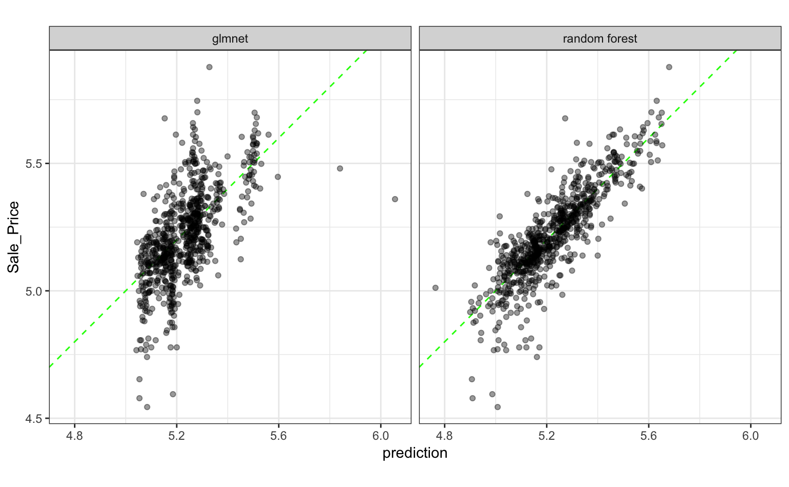

The Ames housing data will be used to to demonstrate how regression models can be made using parsnip. We’ll create the data set and create a simple training/test set split:
library(AmesHousing)
ames <- make_ames()
library(tidymodels)
#> Registered S3 method overwritten by 'xts':
#> method from
#> as.zoo.xts zoo
#> ── Attaching packages ────────────────────────────────────────────────────────────────────────── tidymodels 0.0.3 ──
#> ✔ broom 0.5.2 ✔ recipes 0.1.7.9001
#> ✔ dials 0.0.3.9002 ✔ rsample 0.0.5
#> ✔ dplyr 0.8.3 ✔ tibble 2.99.99.9010
#> ✔ infer 0.5.0 ✔ yardstick 0.0.4
#> ✔ purrr 0.3.3
#> ── Conflicts ───────────────────────────────────────────────────────────────────────────── tidymodels_conflicts() ──
#> ✖ dplyr::combine() masks randomForest::combine()
#> ✖ purrr::discard() masks scales::discard()
#> ✖ dplyr::filter() masks stats::filter()
#> ✖ dplyr::lag() masks stats::lag()
#> ✖ dials::margin() masks ggplot2::margin(), randomForest::margin()
#> ✖ dials::offset() masks stats::offset()
#> ✖ recipes::step() masks stats::step()
set.seed(4595)
data_split <- initial_split(ames, strata = "Sale_Price", p = 0.75)
ames_train <- training(data_split)
ames_test <- testing(data_split)We’ll start by fitting a random forest model to a small set of parameters. Let’s say that the model would include predictors: Longitude, Latitude, Lot_Area, Neighborhood, and Year_Sold. A simple random forest model can be specified via
library(parsnip)
rf_defaults <- rand_forest(mode = "regression")
rf_defaults
#> Random Forest Model Specification (regression)The model will be fit with the ranger package. Since we didn’t add any extra arguments to fit, many of the arguments will be set to their defaults from the specific function that is used by ranger::ranger. The help pages for the model function describes the changes to the default parameters that are made and the translate function can also be used.
parsnip gives two different interfaces to the models: the formula and non-formula interfaces. Let’s start with the non-formula interface:
preds <- c("Longitude", "Latitude", "Lot_Area", "Neighborhood", "Year_Sold")
rf_xy_fit <-
rf_defaults %>%
set_engine("ranger") %>%
fit_xy(
x = ames_train[, preds],
y = log10(ames_train$Sale_Price)
)
rf_xy_fit
#> parsnip model object
#>
#> Fit in: 945msRanger result
#>
#> Call:
#> ranger::ranger(formula = formula, data = data, num.threads = 1, verbose = FALSE, seed = sample.int(10^5, 1))
#>
#> Type: Regression
#> Number of trees: 500
#> Sample size: 2199
#> Number of independent variables: 5
#> Mtry: 2
#> Target node size: 5
#> Variable importance mode: none
#> Splitrule: variance
#> OOB prediction error (MSE): 0.00843
#> R squared (OOB): 0.736The non-formula interface doesn’t do anything to the predictors before giving it to the underlying model function. This particular model does not require indicator variables to be create prior to the model (note that the output shows “Number of independent variables: 5”).
For regression models, the basic predict method can be used and returns a tibble with a column named .pred:
test_results <- ames_test %>%
select(Sale_Price) %>%
mutate(Sale_Price = log10(Sale_Price)) %>%
bind_cols(
predict(rf_xy_fit, new_data = ames_test[, preds])
)
test_results
#> # A tibble: 731 x 2
#> Sale_Price .pred
#> <dbl> <dbl>
#> 1 5.33 5.22
#> 2 5.02 5.21
#> 3 5.27 5.25
#> 4 5.60 5.51
#> 5 5.28 5.25
#> 6 5.17 5.19
#> 7 5.02 4.97
#> 8 5.46 5.50
#> 9 5.44 5.46
#> 10 5.33 5.50
#> # … with 721 more rows
# summarize performance
test_results %>% metrics(truth = Sale_Price, estimate = .pred)
#> # A tibble: 3 x 3
#> .metric .estimator .estimate
#> <chr> <chr> <dbl>
#> 1 rmse standard 0.0916
#> 2 rsq standard 0.715
#> 3 mae standard 0.0663Note that:
fit (perhaps using the recipes package).Now, for illustration, let’s use the formula method using some new parameter values:
rand_forest(mode = "regression", mtry = 3, trees = 1000) %>%
set_engine("ranger") %>%
fit(
log10(Sale_Price) ~ Longitude + Latitude + Lot_Area + Neighborhood + Year_Sold,
data = ames_train
)
#> parsnip model object
#>
#> Fit in: 2.7sRanger result
#>
#> Call:
#> ranger::ranger(formula = formula, data = data, mtry = ~3, num.trees = ~1000, num.threads = 1, verbose = FALSE, seed = sample.int(10^5, 1))
#>
#> Type: Regression
#> Number of trees: 1000
#> Sample size: 2199
#> Number of independent variables: 5
#> Mtry: 3
#> Target node size: 5
#> Variable importance mode: none
#> Splitrule: variance
#> OOB prediction error (MSE): 0.00849
#> R squared (OOB): 0.734Suppose that there was some feature in the randomForest package that we’d like to evaluate. To do so, the only part of the syntaxt that needs to change is the set_engine argument:
rand_forest(mode = "regression", mtry = 3, trees = 1000) %>%
set_engine("randomForest") %>%
fit(
log10(Sale_Price) ~ Longitude + Latitude + Lot_Area + Neighborhood + Year_Sold,
data = ames_train
)
#> parsnip model object
#>
#> Fit in: 1.9s
#> Call:
#> randomForest(x = as.data.frame(x), y = y, ntree = ~1000, mtry = ~3)
#> Type of random forest: regression
#> Number of trees: 1000
#> No. of variables tried at each split: 3
#>
#> Mean of squared residuals: 0.013
#> % Var explained: 59.4Look at the formula code that was printed out, one function uses the argument name ntree and the other uses num.trees. parsnip doesn’t require you to know the specific names of the main arguments.
Now suppose that we want to modify the value of mtry based on the number of predictors in the data. Usually, the default value would be floor(sqrt(num_predictors)). To use a pure bagging model would require an mtry value equal to the total number of parameters. There may be cases where you may not know how many predictors are going to be present (perhaps due to the generation of indicator variables or a variable filter) so that might be difficult to know exactly.
When the model it being fit by parsnip, data descriptors are made available. These attempt to let you know what you will have available when the model is fit. When a model object is created (say using rand_forest), the values of the arguments that you give it are immediately evaluated… unless you delay them. To delay the evaluation of any argument, you can used rlang::expr to make an expression.
Two relevant descriptors for what we are about to do are:
.preds(): the number of predictor variables in the data set that are associated with the predictors prior to dummy variable creation..cols(): the number of predictor columns after dummy variables (or other encodings) are created.Since ranger won’t create indicator values, .preds() would be appropriate for using mtry for a bagging model.
For example, let’s use an expression with the .preds() descriptor to fit a bagging model:
rand_forest(mode = "regression", mtry = .preds(), trees = 1000) %>%
set_engine("ranger") %>%
fit(
log10(Sale_Price) ~ Longitude + Latitude + Lot_Area + Neighborhood + Year_Sold,
data = ames_train
)
#> parsnip model object
#>
#> Fit in: 3.7sRanger result
#>
#> Call:
#> ranger::ranger(formula = formula, data = data, mtry = ~.preds(), num.trees = ~1000, num.threads = 1, verbose = FALSE, seed = sample.int(10^5, 1))
#>
#> Type: Regression
#> Number of trees: 1000
#> Sample size: 2199
#> Number of independent variables: 5
#> Mtry: 5
#> Target node size: 5
#> Variable importance mode: none
#> Splitrule: variance
#> OOB prediction error (MSE): 0.0087
#> R squared (OOB): 0.728A linear model might work here too. The linear_reg model can be used. To use regularization/penalization, there are two engines that can do that here: the glmnet and sparklyr packages. The former will be used here and it only implements the non-formula method. parsnip will allow either to be used though.
When regularization is used, the predictors should first be centered and scaled before given to the model. The formula method won’t do that so some other methods will be required. We’ll use recipes package for that (more information here).
norm_recipe <-
recipe(
Sale_Price ~ Longitude + Latitude + Lot_Area + Neighborhood + Year_Sold,
data = ames_train
) %>%
step_other(Neighborhood) %>%
step_dummy(all_nominal()) %>%
step_center(all_predictors()) %>%
step_scale(all_predictors()) %>%
step_log(Sale_Price, base = 10) %>%
# estimate the means and standard deviations
prep(training = ames_train, retain = TRUE)
# Now let's fit the model using the processed version of the data
glmn_fit <-
linear_reg(penalty = 0.001, mixture = 0.5) %>%
set_engine("glmnet") %>%
fit(Sale_Price ~ ., data = juice(norm_recipe))
glmn_fit
#> parsnip model object
#>
#> Fit in: 9ms
#> Call: glmnet::glmnet(x = as.matrix(x), y = y, family = "gaussian", alpha = ~0.5)
#>
#> Df %Dev Lambda
#> 1 0 0.000 0.1370
#> 2 1 0.019 0.1250
#> 3 1 0.036 0.1140
#> 4 1 0.050 0.1040
#> 5 2 0.068 0.0946
#> 6 4 0.093 0.0862
#> 7 5 0.125 0.0785
#> 8 5 0.153 0.0716
#> 9 7 0.184 0.0652
#> 10 7 0.214 0.0594
#> 11 7 0.240 0.0541
#> 12 8 0.262 0.0493
#> 13 8 0.286 0.0449
#> 14 8 0.306 0.0409
#> 15 8 0.323 0.0373
#> 16 8 0.338 0.0340
#> 17 8 0.350 0.0310
#> 18 8 0.361 0.0282
#> 19 9 0.370 0.0257
#> 20 9 0.379 0.0234
#> 21 9 0.386 0.0213
#> 22 9 0.392 0.0195
#> 23 9 0.397 0.0177
#> 24 9 0.401 0.0161
#> 25 9 0.405 0.0147
#> 26 9 0.408 0.0134
#> 27 10 0.410 0.0122
#> 28 11 0.413 0.0111
#> 29 11 0.415 0.0101
#> 30 11 0.417 0.0092
#> 31 12 0.418 0.0084
#> 32 12 0.420 0.0077
#> 33 12 0.421 0.0070
#> 34 12 0.422 0.0064
#> 35 12 0.423 0.0058
#> 36 12 0.423 0.0053
#> 37 12 0.424 0.0048
#> 38 12 0.425 0.0044
#> 39 12 0.425 0.0040
#> 40 12 0.425 0.0036
#> 41 12 0.426 0.0033
#> 42 12 0.426 0.0030
#> 43 12 0.426 0.0028
#> 44 12 0.426 0.0025
#> 45 12 0.426 0.0023
#> 46 12 0.426 0.0021
#> 47 12 0.427 0.0019
#> 48 12 0.427 0.0017
#> 49 12 0.427 0.0016
#> 50 12 0.427 0.0014
#> 51 12 0.427 0.0013
#> 52 12 0.427 0.0012
#> 53 12 0.427 0.0011
#> 54 12 0.427 0.0010
#> 55 12 0.427 0.0009
#> 56 12 0.427 0.0008
#> 57 12 0.427 0.0008
#> 58 12 0.427 0.0007
#> 59 12 0.427 0.0006
#> 60 12 0.427 0.0006
#> 61 12 0.427 0.0005
#> 62 12 0.427 0.0005
#> 63 12 0.427 0.0004
#> 64 12 0.427 0.0004
#> 65 12 0.427 0.0004If penalty were not specified, all of the lambda values would be computed.
To get the predictions for this specific value of lambda (aka penalty):
# First, get the processed version of the test set predictors:
test_normalized <- bake(norm_recipe, new_data = ames_test, all_predictors())
test_results <-
test_results %>%
rename(`random forest` = .pred) %>%
bind_cols(
predict(glmn_fit, new_data = test_normalized) %>%
rename(glmnet = .pred)
)
test_results
#> # A tibble: 731 x 3
#> Sale_Price `random forest` glmnet
#> <dbl> <dbl> <dbl>
#> 1 5.33 5.22 5.27
#> 2 5.02 5.21 5.17
#> 3 5.27 5.25 5.23
#> 4 5.60 5.51 5.25
#> 5 5.28 5.25 5.25
#> 6 5.17 5.19 5.19
#> 7 5.02 4.97 5.19
#> 8 5.46 5.50 5.49
#> 9 5.44 5.46 5.48
#> 10 5.33 5.50 5.47
#> # … with 721 more rows
test_results %>% metrics(truth = Sale_Price, estimate = glmnet)
#> # A tibble: 3 x 3
#> .metric .estimator .estimate
#> <chr> <chr> <dbl>
#> 1 rmse standard 0.132
#> 2 rsq standard 0.410
#> 3 mae standard 0.0956
test_results %>%
gather(model, prediction, -Sale_Price) %>%
ggplot(aes(x = prediction, y = Sale_Price)) +
geom_abline(col = "green", lty = 2) +
geom_point(alpha = .4) +
facet_wrap(~model) +
coord_fixed()
#> Warning: Row indexes must be between 0 and the number of rows (0). Use `NA` as row index to obtain a row full of `NA` values.
#> This warning is displayed once per session.